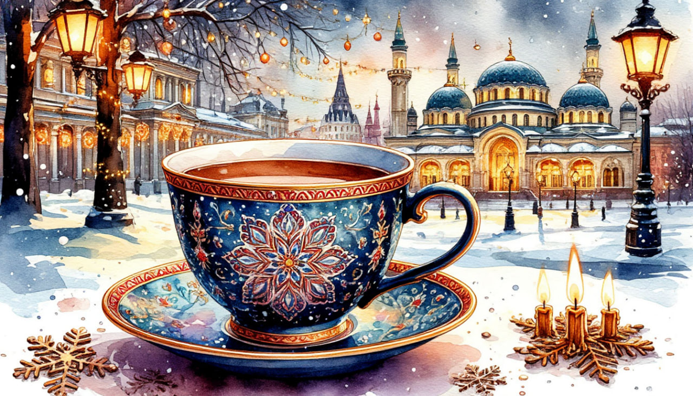

Новогодняя мозаика в Казани

Даты тура: со 2 января 2027 года (сб) по 6 января 2027 года (ср)
Стоимость тура:
- 26 200 р. - взрослый
- 26 100 р.- пенсионеры/студенты/школьники (до 13ти лет)
- 31 700 р./чел - одноместное размещение
По программе:
- - Обзорная экскурсия "Новогодние краски Казани"
- - Экскурсия по территории Кремля
- - Рождественский визит с программой в музее
- - Мастер-класс по Чак-Чаку
- - Экскурсия в Раиф и Свияжск
- - Храм всех религий
- - Экскурсия в ТАТАР АВЫЛЫ
Программа тура:
1 день: Отправление
- 18-00- выезд из Костромы от ТРЦ "РИО" (Ул. Магистральная, 20), правый угол от центрального входа
2 день: Казань
- Прибытие в Казань
- Завтрак в кафе города.
- Обзорная экскурсия по городу «Новогодние краски Казани». В ярком новогоднем украшении и морозном запахе хвои, древний город предстанет в самом его сказочном воплощении!
- Вы проникнитесь удивительным сочетанием различных религиозных течений и наслоение исторических эпох. Синтез прошлого и настоящего восхищает туристов, ведь эклектика Казани – это богатство, сохраненное жителями Республики. По пути следования экскурсии, осмотр красивейших городских Новогодних ёлок Казани.
- - Богородицкий монастырь, где хранится чудотворная икона Казанской Божией Матери;
- - Петропавловский собор – ценнейший архитектурный памятник и один из духовных символов Казани;
- - Смотровую площадку Казанского Кремля, с которой открываются фантастически красивые виды на Казань: вид на реку Казанку, Центр семьи «Kazan», Дворец Земледельцев, Кремлёвскую набережную, аквапарк «Ривьера», спортивные объекты, построенные к Универсиаде – 2013 и современные постройки;
- - Набережную озера Кабан – прекрасную прогулочную зону.
- Экскурсия в Казанский кремль.
- Казанский кремль построили по приказу Ивана Грозного на руинах мощной цитадели Казанского ханства. Крепость смогла выдержать осаду Емельяна Пугачёва и бои времён Гражданской войны. По её мостовым ходили Пётр I и Екатерина II, а убранством Благовещенского собора восхищался великий французский писатель Александр Дюма. Уникальная архитектура кремля признана объектом Всемирного наследия ЮНЕСКО.
- Во время экскурсии вы увидите:
- - мечеть «Кул-Шариф» и Благовещенский собор;
- - средневековые стены и башни, возведённые лучшими мастерами Ивана Грозного;
- - дворец главы Республики Татарстан и мавзолей казанских ханов;
- - «падающую» башню Сююмбике;
- - смотровую площадку с потрясающим видом на центр города.
- Обед в кафе города с мастер - классом . Приглашаем на кулинарный мастер-класс по изготовлению татарского десерта - чак-чака! Вы научитесь приготовлению этого восточного лакомства.
- Размещение в отеле
- Свободное время
- 19-00 (ориентировочно) Для желающих вечерняя экскурсия «Огни ночной Казани».
- Стоимость: 1 500 руб/чел.
- С наступлением темноты древняя столица превращается в город из сказок «Тысячи и одной ночи», а его здания и набережные сверкают как изумруды в море миллионов огней. Улицы с тысячелетней историей предстанут перед вами в новом свете. Во время путешествия в сказку вы увидите красивейшие уголки ночного города: Старо-Татарскую слободу в отражении вод озера Кабан, волшебный замок театра кукол, Дворец Земледельцев с гигантским бронзовым деревом и россыпи огней Кремлевской набережной. Окончание экскурсионной программы.
3 день: Казань
- Завтрак в отеле «шведский стол»
- 11-00 Новогодняя экскурсия в один из интереснейших музеев Казани. В самом сердце старинной Казани, среди заснеженных особняков, спряталась настоящая жемчужина — единственный в России музей поэта Евгения Боратынского. В канун праздников его старинная усадьба сбрасывает пелену веков, чтобы пригласить вас на «Рождественский визит».
- Это не просто экскурсия, а магическое путешествие во времени. Вы пройдете по залам, утопающим в блеске мишуры и сиянии свечей, чтобы узнать, как встречали Рождество в дворянских семьях до революции. Под высокой елкой вас встретит сам Дед Мороз: вместе вы споете забытые рождественские гимны, а после согреетесь пряным зимним глинтвейном, вдыхая ароматы корицы и мандаринов. Оставьте суету за порогом — позвольте магии старинного рода Боратынских укутать вас в уют и предвкушение чуда
- Прогулка с экскурсией по пешеходной улице Баумана. Большинство зданий на улице Баумана — памятники архитектуры и истории, красивейшие купеческие особняки XIX века, такие, как дом Соломина-Смолина, дом купцов Шмелева и Смоленцева, который занимает отель «Шаляпин». Неподалеку Богоявленский собор, в котором крестили Федора Шаляпина, а рядом с отелем его имени установлен памятник певцу, родившемуся в Казани.
- Обед в кафе города.
- Свободное время в центре города
4 день: Раифа + Свияжск
- Завтрак в отеле «шведский стол»
- Загородная экскурсия в Раифский Богородицкий мужской монастырь. Раифский монастырь – крупнейший в Казанском крае. Он был основан в начале XVII века отшельником Филаретом на землях языческих марийских племен. К началу XX века здесь сложился неповторимый архитектурный ансамбль из 60-метровой колокольни и пяти храмов, окруженных башнями и каменной стеной. Расположенный на берегу красивейшего Раифского озера посередине заповедного леса, монастырь напоминает сказочный город, по велению свыше показавшийся из воды.
- Во время экскурсии вы увидите:
- - Грузинский собор первой половины XIX века, где хранится главная святыня монастыря – чудотворный список Грузинской иконы Божией Матери
- - Троицкий собор начала XX века, построенный в русско-византийском стиле, который славится потрясающей акустикой
- - Софийскую церковь конца XVIII века – один из самых маленьких храмов Европы
- - надвратную 60-метровую колокольню с храмом Михаила Архангела
- - часовню с источником святой воды
- - заповедное Раифское озеро, где узнаем, почему в нем никогда не квакают лягушки
- Осмотр «Храма всех религий» на старом Московском тракте.
- Комплекс представляет собой необычное архитектурное смешивание разных культур и мировых верований — церкви, мечети, синагоги, пагоды, индуистские храмы, а также верования исчезнувших цивилизаций. Вселенский храм — это не место для богослужений, а музей и архитектурный памятник, и символический симбиоз религий, цивилизаций и культур. Внутри храм всех религий имеет несколько красиво декорированных залов, посвященных различным верованиям: зал Будды, Египетский зал, Католический зал, зал Иисуса Христа; есть также Театральный зал, картинная галерея, где проходят выставки художников, чайная комната. Важной составной частью памятника религий выступает и одна из комнат родного дома Ильдара Ханова, в которой он жил. После его смерти в комнате организовали музей в его честь.
- Экскурсия в этномузей «ТАТАР АВЫЛЫ», где воссозданы жилые постройки татарской деревни 19 века, образ жизни народа того времени, быт, одежда, национальная кухня, ремесла и этнографические традиции. Вас встретит гостеприимный хозяин татар-бабай с песней под гармошку, с живыми рассказами об особенностях уклада татарской деревни, научит набирать воду из старинного колодца, наглядно продемонстрирует назначение каждого предмета в интерьере татарского дома, особенностях жизни народа, прокатит на качелях, пригласит посетить домик Шурале и избушку Бабы Яги.
- Далее экскурсия в Свияжск.
- История Свияжска началась в 1551 г., когда всего за 4 недели русские мастера срубили здесь, на острове, деревянную крепость — форпост армии Ивана Грозного перед штурмом Казани. Сегодня это современный музей-заповедник, в котором сохранились уникальные памятники архитектуры:
- - церковь Николая Чудотворца
- - собор Успения Богородицы
- - собор Богоматери Всех Скорбящих Радости
- - единственный памятник деревянного зодчества Поволжья — Троицкая церковь
- Обед в кафе города
- Свободное время
- Выезд из Свияжска
- Возвращение домой.
5 день: Прибытие домой
Прибытие в Кострому в первой половине дня (ориентировочно)
В стоимость тура входит:- - проживание в гостинице*
- * отель "ВояжЪ" (Номер реестровой записи: С)
- - питание: 3 завтрака + 3 обеда
- - услуги гида-экскурсовода
- - экскурсионная программа
- - автобусное обслуживание по программе тура
Дополнительно оплачиваются (по желанию) СТРОГО ПРИ БРОНИРОВАНИИ ТУРА:- - Экскурсия «Вечерняя Казань». Стоимость: 1 500 р./чел. (все категории)
- Для бронирования необходимы данные паспорта РФ и свидетельства о рождении, если с вами путешествуют дети
- Предоплата – 50% от стоимости тура. Остаток за 30 дней до даты выезда.
- Любой тур можно оформить не выходя из дома. Подробнее: Тут
Стоимость тура не зафиксированы и могут быть изменены в большую или меньшую сторону в зависимости от уровня спроса в любой момент.
Время начала экскурсий и их порядок указано ориентировочно.
Фирма-исполнитель оставляет за собой право замены экскурсий без уменьшения общего объема экскурсионной программы.
По вопросам бронирования обращайтесь: